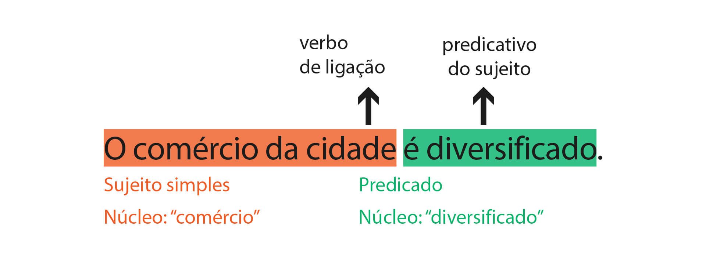
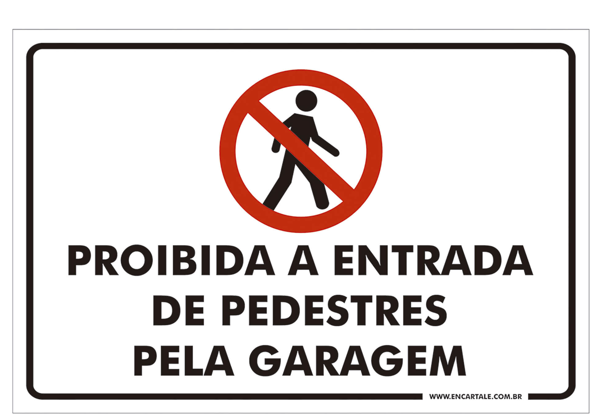
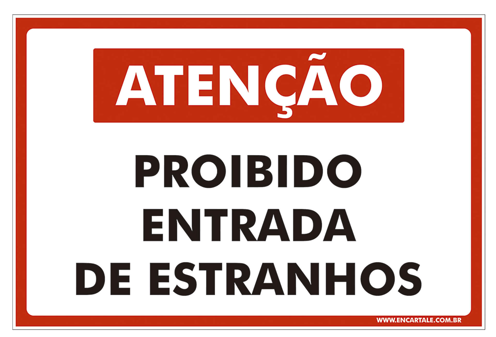

ILHA de calor na Amazônia. Disponível em: <http://revistapesquisa.fapesp.br/2012/10/11/ilha-de-calor-na-amazonia/>. Acesso em: 25 jan. 2018.
Introdução
Expliquem o conteúdo do infográfico: descrevam a comparação entre zona rural e cidade, considerando as linguagens visual e verbal; destaquem quais são os critérios da comparação, o que se informa a respeito de cada critério e qual
é a conclusão apontada no infográfico.
Avaliem a situação representada no infográfico e apresentem soluções possíveis para o problema.
Que expressões foram empregadas na apresentação de soluções para o problema?
De que modo você costuma apresentar sua opinião em sala de aula? Que expressões usa para introduzi-la em uma conversa com a classe toda ou em um texto escrito para um trabalho?
Objetivos
Ler e interpretar dissertações, compreendendo sua função social.
Analisar a estrutura composicional de dissertações.
Identificar orações com a estrutura sujeito + verbo de ligação + predicativo.
Participar de um debate regrado.
Produzir uma dissertação.
Painel de leitura
Dissertação
O texto que você estudará nesta seção tem por base um aspecto da formação das ilhas de calor, representada graficamente no infográfico que você leu na abertura do capítulo.
Ilhas de calor
Fenômeno climático verificado nas cidades mais urbanizadas, em que a temperatura média é mais elevada do que nas regiões rurais próximas.
A autora deste texto é aluna do Ensino Fundamental Anos Finais, da cidade de Naviraí (Mato Grosso do Sul). Ela participou de um projeto de escrita do programa Escrevendo o Futuro. O texto foi um dos finalistas do projeto, premiado com
sua publicação.
Antes de ler o texto integralmente, considere seu título.
De nossas atitudes hoje, depende o futuro: preservar ou asfaltar?
Ao finalizar o título com ponto de interrogação, a autora do texto instaura uma polêmica marcada por alternativas diferentes. Que polêmica é e como ela se relaciona com a questão climática em estudo? Registre.
De acordo com o título, que comportamento a autora espera das pessoas? Explique sua resposta.
Leia agora o texto integralmente.
De nossas atitudes hoje, depende o futuro: preservar ou asfaltar?
Victória Haydee Bronzatte Teixeira Malavazi
Moro numa cidade que está em pleno desenvolvimento econômico com a instalação de indústrias e onde o comércio é bem diversificado. Um fato importante vem acontecendo em nosso município desde o ano 2000, quando foi criado,
através do Decreto Municipal 049/2000, o “Parque Sucupira 1”.
A palavra decreto é assim definida na área jurídica:
[...] são atos administrativos da competência exclusiva dos Chefes do Executivo [presidente da República, governadores e prefeitos], destinados a prover situações gerais ou individuais, abstratamente previstas [...] pela
legislação. [...] Como ato administrativo, o decreto está sempre em situação inferior à da lei e, por isso mesmo, não a pode contrariar.
MEIRELLES, Hely L. Direito administrativo brasileiro. 23. ed. São Paulo: Malheiros editores, 1998. p. 159.
Esse ato administrativo deve regular situações não detalhadas pelas leis, mas não pode contrariá-las ou modificá-las.
Antigamente, essa era uma área onde as crianças tomavam banho, num laguinho formado por minas-d’água. Com o passar do tempo se tornou um local onde os moradores jogavam toda espécie de
lixo, como: papéis, móveis velhos, vidros,
latas, animais mortos, pastagens para animais e que também servia como acampamento de ciganos. O terreno e as águas das minas naturais foram poluídos.
Na época, a Prefeitura Municipal pretendia fazer o prolongamento da Avenida Caarapó, que nasce a duas quadras da Praça Euclides Antônio Fabis, passando o asfalto exatamente dentro dessa área. Deram início à obra, mas alguns
moradores, professores e a SEMA (Secretaria Estadual do Meio Ambiente) entraram na justiça contra o município e paralisaram a obra.
Depois de alguns anos a prefeitura reiniciou o que havia começado anos atrás: a pavimentação asfáltica, na chamada “biquinha”. Homens e máquinas trabalhavam a todo vapor. Aterraram o local, canalizaram as nascentes para
abastecimento de caminhões-pipas. Novamente a polêmica entre a SEMA, que não quer o asfalto e sim preservar as nascentes, e a Prefeitura Municipal. Criou-se então a Área de Conservação e Implantação do Parque Natural Sucupira e
Área de Lazer.
De acordo com pesquisa realizada com moradores da cidade e do bairro citados, alguns são favoráveis à pavimentação asfáltica no local, pois facilitará o acesso ao centro da cidade, os terrenos serão valorizados, novos comércios
surgirão, haverá iluminação pública e o bairro ficará mais bonito. Outros moradores são favoráveis à construção do parque, pois haverá a conservação das minas. Futuramente poderia ser construída passarela para pedestres sobre as
minas, pista de caminhada, local para eventos culturais, campo de futebol de areia, quadra de vôlei, parquinho para crianças, replantio de árvores nativas como: candeia, banana-de-macaco e outras.
Segundo a coordenadora do Parque, a senhorita Kátia Vivian Chrestani, em visita com os alunos ao local, essas árvores são propícias à área e é importante que as pessoas tenham consciência da importância da preservação da área
para uma qualidade de vida melhor.
Do meu ponto de vista, vamos exercer nossos direitos de cidadãos e cobrar das autoridades a construção da área de lazer e a conservação das minas no local, onde a água brota da terra.
Portanto, vamos abrir os olhos e dar uma chance à natureza ou, num futuro não muito distante, muitos irão se lembrar das minas que “mataram aqui”, e como em tantos outros lugares do Planeta Terra.
MALAVAZI, Victória H. B. T. De nossas atitudes hoje, depende o futuro: preservar ou asfaltar? Disponível em:
<https://www.escrevendoofuturo.org.br/conteudo/biblioteca/nossas-publicacoes/textos-dos-finalistas/artigo/1292/textos-dos-alunos-finalistas-de-2006>. Acesso em: 26 jan. 2018.
Mina-d’água: nascente de água.
SEMA (Secretaria Municipal do Meio Ambiente): hoje em dia, no Mato Grosso do Sul, esse órgão denomina-se SEMADE (Secretaria de Estado do Meio Ambiente e Desenvolvimento Econômico).
Depois de ler o texto integralmente, retome suas anotações sobre a discussão anterior e responda:
a) O texto atendeu às expectativas criadas pelo título? Justifique sua resposta.
b) Ter conhecimento prévio a respeito da formação das ilhas de calor e dos fatores que provocam esse fenômeno ajuda a compreender as questões ambientais envolvidas na discussão apresentada
no texto ou é um conhecimento desnecessário? Justifique sua resposta.
Ainda no primeiro parágrafo, a autora menciona a criação de um decreto. Para que esse ato administrativo foi criado?
Considerando que um decreto apresenta situações não detalhadas pelas leis, ou seja, ele não obriga ninguém a fazer ou a deixar de fazer algo, o decreto de 2000 efetivamente criou o parque? Que parte(s) do texto comprova(m) essa
afirmação?
Com a publicação do decreto, a polêmica em torno da preservação da área nativa foi resolvida? Que parte do texto comprova isso?
Que aspectos a autora do texto escolheu abordar no primeiro parágrafo?
Relacione as colunas, considerando as condições de produção e de recepção desse texto.
( 1 ) Quem produziu o discurso?
( 2 ) Tema do texto
( 3 ) Objetivo comunicativo
( 4 ) Situação de produção
( 5 ) Leitor provável do texto
( 6 ) Pessoa do discurso utilizada
( 7 ) Tempos verbais utilizados
( 8 ) Estrutura predominante do texto
( 9 ) Linguagem
(___) 1a. pessoa (singular/plural).
(___) Argumentativa.
(___) Criação do Parque Sucupira 1.
(___) Expor opinião sobre a polêmica em torno do assunto.
(___) Programa Escrevendo o Futuro.
(___) Adequada à norma-padrão.
(___) Comunidade em geral e avaliadores do projeto.
(___) Presente, pretéritos perfeito e imperfeito e futuro.
(___) Aluna do Ensino Fundamental Anos Finais, da cida-
de de Naviraí (Mato Grosso do Sul).
Nos parágrafos 2, 3 e 4, a autora emprega recursos linguísticos para situar o leitor em relação à polêmica discutida.
a) Identifique as expressões iniciais desses parágrafos. Que função elas exercem no texto?
b) Nesses parágrafos, outra classe gramatical tem função semelhante às expressões indicadas no item a. Qual? Explique sua resposta.
c) Pode-se dizer que, nesses parágrafos, a autora do texto informa o leitor sobre
Considerando os parágrafos 2, 3 e 4, indique, nos parênteses, o número do parágrafo a que pertence à ideia-síntese.
a) A prefeitura reiniciou a pavimentação asfáltica, reabrindo a polêmica. (___)
b) Alguns moradores e a SEMA se queixaram na Justiça e a obra foi paralisada. (___)
c) O terreno foi poluído devido ao lixo depositado ali. (___)
d) A prefeitura iniciou o prolongamento de uma avenida próxima ao local asfaltando a área. (___)
e) Nessa área do parque, as crianças tomavam banho no laguinho. (___)
f) Foram criadas duas áreas dentro do parque: uma de preservação, outra de lazer. (___)
Sintetize a situação-problema em torno da qual se constrói o texto.
A dissertação escolar aborda uma situação-problema (ou polêmica), apresentando-a e defendendo uma opinião a respeito dela.
Considere o parágrafo 5 para responder às questões a seguir.
a) No momento da escrita do texto, a polêmica sobre o local continuava ou tinha sido resolvida? Explique sua resposta.
b) Que argumentos cada grupo usou para defender sua ideia?
c) Em que se baseou a autora do texto para dar essas informações?
d) Considerando sua resposta ao item c, as informações apresentadas pela autora são fatos ou opiniões? Explique.
e) No trecho final do parágrafo consta: “Futuramente poderia ser construída passarela para pedestres sobre as minas, pista de caminhada,[...]”. Pelo contexto, infere-se que essa ideia é
(___) da autora do texto.
(___) da coordenadora do Parque, Kátia Vivian Chrestani.
(___) dos moradores que são favoráveis à construção do parque.
(___) dos moradores que são favoráveis à pavimentação asfáltica da área.
Releia o trecho do parágrafo 6.
Segundo a coordenadora do Parque, a senhorita Kátia Vivian Chrestani, em visita com os alunos ao local, essas árvores são propícias à área e é importante que as pessoas tenham consciência da importância da preservação da área
para uma qualidade de vida melhor.
a) Dessa afirmação, é possível inferir que
(___) a autora do texto visitou o parque e pôde coletar essa afirmação.
(___) a autora vale-se da opinião de uma especialista para afirmar um posicionamento sobre a polêmica em questão.
b) Qual é a opinião dessa especialista sobre o tema? E que argumento ela apresenta para defender sua ideia?
c) Nesse trecho, a autora usou duas palavras de sentido próximo, mas de classes gramaticais diferentes. Identifique essas palavras e reescreva o trecho propondo substituições para evitar a
repetição.
Considere os dois últimos parágrafos do texto para responder às questões a seguir.
a) Qual é o conteúdo do parágrafo 7?
b) Qual é a opinião da autora do texto sobre a polêmica?
c) Que expressão a autora usa nesse trecho para evidenciar que se trata de sua opinião?
d) De acordo com a autora do texto, outras pessoas devem agir para a solução do problema. Quem são essas pessoas e como elas devem agir? Explique
sua resposta.
A dissertação escolar expõe uma avaliação do problema ou uma solução para ele.
e) A autora termina o texto aproximando presente e futuro; meio ambiente local e global. Explique essa análise.
f) A autora convida os leitores (ou os cidadãos) a agir em prol da questão. Que elemento linguístico marca esse posicionamento?
Com a proposta de solução apresentada para a situação-problema, a autora do texto
a) mantém o tema em discussão do início ao fim do texto.
b) considera que o planeta está perdido.
c) propõe uma resposta à questão apresentada pelo título.
d) defende a conservação do lugar.
e) convida os leitores a participar de sua proposta.
f) escolhe um único lado da polêmica, pois acredita que o outro não é pertinente.
Você já estudou que, em geral, esta é a estrutura da dissertação escolar: apresentação da situação-problema; discussão/argumentação e conclusão.
A dissertação escolar, geralmente, apresenta a seguinte estrutura argumentativa:
Situação-problema: apresentação do tema ou da questão a ser discutida no texto.
Discussão: construção do ponto de vista sobre o tema e reunião de argumentos que fundamentam essa opinião.
Conclusão: sugestão de solução para o problema ou avaliação dele, reafirmando o ponto de vista defendido no texto.
a) Indique os parágrafos de cada parte da estrutura da dissertação lida.
Estrutura
Parágrafos
Apresentação da situação-problema
Tese ou polêmica
Discussão/argumentação
Conclusão
b) A maior parte da dissertação foi empregada no desenvolvimento de qual parte da estrutura?
c) A opinião da autora é apresentada quase no fim do texto. Você considera que, com essa estrutura, o texto prende a atenção do leitor, ou seja, torna-se interessante? Justifique sua
resposta.
A dissertação escolar é um texto argumentativo. Ao construir sua argumentação, a autora se valeu de que tipos de argumentos? Identifique o(s) parágrafo(s) em que os argumentos a seguir
aparecem.
Ao defender uma ideia, é preciso apresentar justificativas que levem o interlocutor a se convencer do ponto de vista abordado. Para isso, é possível usar vários tipos de argumento. Veja alguns deles.
Dados estatísticos (ou argumento por evidência): apresentação de dados confiáveis de pesquisas ajuda a mostrar que o argumento tem fundamento.
Ex.: Segundo o IBGE, o Brasil tem ainda 11,8 milhões de analfabetos.
Argumento de autoridade: apresenta informação ou opinião de especialista no campo de conhecimento em questão.
Ex.: Segundo o cientista da NASA James Hansen, a temperatura da Terra alcançou, nos últimos 30 anos, uma rápida ascensão de cerca de 0,2 graus Celsius.
Argumento por raciocínio lógico: criado por meio de relações de causa e efeito, é um recurso utilizado para demonstrar que uma conclusão (afirmada no texto) é pertinente, é lógica, é certa, e não fruto de
uma interpretação pessoal, que pode ser contestada.
Ex.: A falta de policiamento nos centros urbanos tem provocado insegurança na população.
Alusão histórica: remissão a fatos passados, de conhecimento geral, que podem ajudar a fundamentar o ponto de vista.
Ex.: A Lei Áurea é um dos marcos mais importantes da história de nosso país.
a) Argumento de autoridade:
b) Alusão histórica:
c) Dados estatísticos:
d) Argumento por raciocínio lógico:
Releia o trecho.
Um fato importante vem acontecendo em nosso município desde o ano 2000, quando foi criado [...] o “Parque Sucupira 1”.
Que palavras nesse trecho indicam que a autora comentará um processo iniciado antes de ela começar a escrever o texto e que ainda não havia terminado quando finalizou a escrita? Explique sua reposta.
Textos argumentativos podem ser escritos em 1ª ou em 3ª pessoa. Qual foi a escolha que a autora fez para estruturar seu texto? Que elementos linguísticos marcam essa escolha?
Releia este trecho do parágrafo 1: “[...] onde o comércio é bem diversificado [...]”.
O destaque indica
(___) uma característica do comércio.
(___) uma ação do comércio.
Compare os trechos retirados do texto com a respectiva reescrita.
Trecho do original: o comércio é bem diversificado.
Trecho reescrito: o comércio parece bem diversificado.
Houve mudança no sentido da oração com a alteração da forma verbal? Explique sua resposta.
Note que, no último parágrafo, a autora usa uma expressão entre aspas:
Num futuro não muito distante, muitos irão se lembrar das minas que “mataram aqui”
a) Que sentido essa expressão tem no texto?
b) Que outra palavra é empregada entre aspas no texto? Qual é seu sentido? Identifique outros termos que servem de sinônimo a ela.
É possível perceber o ponto de vista de quem produz uma argumentação ao identificar alguns recursos empregados na construção do texto, chamados modalizadores discursivos.
Modalizadores discursivos são elementos linguísticos que atuam como indicadores de argumentação. Eles são os encarregados de evidenciar o ponto de vista assumido pelo falante e assegurar o modo como ele elabora o discurso. Podem
ser usados como modalizadores: advérbios, modos verbais, adjetivos, verbos auxiliares (poder, dever, querer), expressões afirmativas ou negativas como “ é possível”, “não é possível”, etc.
Releia o trecho a seguir.
Segundo a coordenadora do Parque, [...] essas árvores são propícias à área e é importante que as pessoas tenham consciência da importância da preservação da área para uma
qualidade de vida melhor.
a) Qual a função (certeza/dúvida ou avaliação/sentimento) da expressão sublinhada?
b) Experimente ler o trecho excluindo essa expressão. Agora, substitua-a por outra que tenha a mesma função modalizadora.
Releia o último parágrafo da dissertação.
Portanto, vamos abrir os olhos e dar uma chance à natureza ou, num futuro não muito distante, muitos irão se lembrar das minas que “mataram aqui”, e como em tantos outros lugares do Planeta Terra.
a) Observe que, nesse trecho, determinada situação é apresentada como uma ameaça. Qual é ela?
b) Reescreva o trecho transformando essa situação em possibilidade. Para isso, empregue um modalizador adequado.
c) Qual das duas versões do trecho impactam o leitor de modo mais forte a respeito de um posicionamento: a original ou a que você reescreveu? Justifique sua resposta.
As conjunções ajudam o falante a organizar seu texto, articulando os termos entre si e as orações.
a) Nos trechos abaixo, as conjunções em destaque têm sentidos diferentes ou iguais? Explique sua resposta.
[...] alguns são favoráveis à pavimentação asfáltica no local, pois facilitará o acesso ao centro da cidade, os terrenos serão valorizados, novos comércios surgirão, haverá iluminação pública e o bairro ficará mais bonito.
Portanto, vamos abrir os olhos e dar uma chance à natureza [...].
b) A seguir, explique o sentido das conjunções em destaque.
Deram início à obra, mas alguns moradores, professores e a SEMA [...] entraram na justiça contra o município e paralisaram a obra.”
c) Nos trechos abaixo, que conjunções ou locuções conjuntivas sinalizam que a autora do texto se vale de outras ideias que não as suas para fortalecer sua argumentação? Explique sua
resposta.
De acordo com pesquisa realizada com moradores da cidade e do bairro citados, alguns são favoráveis à pavimentação asfáltica no local [...].
Segundo a coordenadora do Parque, [...] essas árvores são propícias à área [...].
Práticas de reflexão sobre a língua
Predicado nominal: verbo de ligação e predicativo do sujeito
Reveja este fragmento da dissertação:
De acordo com pesquisa realizada com moradores da cidade e do bairro citados, alguns são favoráveis à pavimentação asfáltica no local, pois facilitará o acesso ao centro da
cidade, os terrenos serão valorizados [...] e o bairro ficará mais bonito.
a) A oração sublinhada apresenta uma ação realizada pelo sujeito? Justifique sua resposta.
b) A forma verbal da oração sublinhada expressa
Os verbos podem ser divididos em significativos (nocionais) ou de ligação. Os primeiros são aqueles que expressam ação, acontecimento, atividade mental, fenômeno da natureza e desejo. São os verbos transitivos ou intransitivos.
Já no caso dos verbos de ligação, a indicação é de estado.
(___) ação.
(___) estado.
(___) fenômeno da natureza.
c) Com a oração em destaque no trecho, a autora da dissertação expõe
( ) o posicionamento de outras pessoas.
( ) o posicionamento da prefeitura.
( ) seu posicionamento pessoal.
d) Qual palavra dessa oração indica esse posicionamento?
f) Os verbos presentes nas orações grifadas são nocionais ou de ligação?
a) Pode-se afirmar que, embora semelhantes, as duas orações têm sentidos diferentes. Explique sua resposta.
Um verbo de ligação exprime estado, o qual pode ser permanente (ele é calmo), transitório (ele está calmo), aparente (ele parece calmo), ou mudança de estado (ele ficou
calmo).
b) A que se deve a diferença de sentido?
c) Que palavra acompanha o verbo no predicado das orações?
d) Essa palavra pertence a uma classe gramatical cuja função é
(___) nomear os seres.
(___) indicar quantidade.
(___) caracterizar o ser.
Um verbo de ligação é acompanhado de predicativo do sujeito. Este termo exprime o estado do sujeito (como ele é/ está/ficou, etc.) e é o núcleo, ou seja, a palavra mais significativa do predicado.

Quando o núcleo do predicado é um verbo, diz-se que o predicado é verbal. Quando o núcleo é o predicativo, diz-se que o predicado é nominal.
Leia as frases e indique se o verbo de ligação exprime estado aparente (EA), estado permanente (EP), mudança de estado (ME), estado transitório (ET).E
Os verbos de ligação têm principalmente função sintática: eles organizam a oração, relacionando o sujeito ao seu predicativo. Mas isso não quer dizer que esses verbos sejam semanticamente neutros. A escolha que se faz do verbo
de ligação interfere no significado da oração.
a) “[...] o comércio é bem diversificado.” (___)
b) O comércio parece bem diversificado. (___)
c) “Os moradores são favoráveis à construção do parque [...].” (___)
d) Outros moradores ficaram preocupados com a construção do parque. (___)
Compare estes pares de orações.
Os jovens ficaram tranquilos.
Os jovens ficaram na praça.
As vias permanecem congestionadas nos horários de pico.
Permaneci em Manaus por dois meses.
a) Qual é o sentido das orações I e III: apresentar um estado/uma característica do sujeito ou uma ação/um acontecimento?
b) Os verbos das orações II e IV expressam ações/acontecimentos ou ligam uma característica ao sujeito?
c) De acordo com os itens anteriores, um mesmo verbo
(___) tem sempre o mesmo sentido.
(___) pode ter sentidos diferentes, dependendo do contexto.
d) Os termos essenciais de uma oração são o sujeito e o predicado. Complete as informações a seguir, considerando os predicados das orações de I a IV.
Em _______________ , os predicados são verbais, pois têm como centro um verbo que indica uma ação.
Em _______________ , os predicados são nominais, pois os verbos ligam uma condição/um estado ao sujeito.
Concordância nominal: o predicativo
Analise a oração “Essas árvores são propícias à área”.
a) Qual a forma verbal da oração?
b) Indique o núcleo do predicado. Ele é verbal ou nominal?
c) Qual é a classe gramatical da palavra que funciona como predicativo do sujeito nesta oração?
d) A palavra indicada no item anterior está flexionada em gênero e número. Justifique essa flexão.
e) Reescreva a oração, fazendo as alterações necessárias, substituindo o sujeito por:
O traçado das ruas
A criação do parque
A criação do parque e o novo viaduto
f) Ao analisar as reescritas e a flexão do verbo de ligação e do predicativo do sujeito, o que se pode afirmar?
Predicativo do sujeito: termo que expressa uma característica ou um estado do sujeito.
Ex.: João é esperto. Felipe está preocupado.
Compare estas construções, todas corretas quanto à concordância do verbo e do predicativo do sujeito:
São benéficos à área a criação do parque e o novo viaduto.
É benéfica à área a criação do parque e o novo viaduto.
É benéfico à área o novo viaduto e a criação do parque.
a) Estas orações estão na ordem direta ou indireta? Justifique sua resposta.
b) Descreva, com suas palavras, a concordância verbal e nominal em I e II.
Caso especial
Leia estes avisos:
TEXTO I

TEXTO II

Adjetivos como proibido, permitido, necessário, bom, etc., acompanhados de verbo ser (visível na frase ou implícito) merecem atenção especial.
a) O adjetivo concorda com o substantivo, se este for acompanhado de artigo ou pronome.
Ex.: Proibida a entrada de estranhos.
b) O adjetivo fica no masculino singular se o substantivo ao qual se refere não vier acompanhado de artigo ou pronome.
Ex.: Proibido entrada de pedestres.
Assinale a(s) proposição(ões) CORRETA(S) no que se refere à concordância nominal.
a) É necessário atenção para resolver as atividades.
b) É necessária a sua presença para resolver esse impasse.
c) A professora do infantil ensinou aos alunos que verdura é bom para a saúde.
d) É proibido entrada nesse local.
e) Era ótimo a temperatura e o tempo na praia.
Prática de oralidade
Debate regrado
Você e seus colegas vão desenvolver um debate regrado sobre um tema polêmico: a política de reserva de vagas (cotas) nos concursos vestibulares. Debater sobre o tema o ajudará a pensar melhor
sobre essa temática, a respeito da qual você escreverá na seção de produção escrita.
Essa modalidade de debate é caracterizada pela presença de um moderador que organiza a discussão, auxilia na síntese das ideias e evita dispersões. Ele é o responsável pela passagem de turno de voz e é quem assegura que regras
preestabelecidas sejam seguidas tanto por debatedores como pela plateia. É importante ressaltar que nem sempre existe um “vencedor” em um debate. Muitas vezes cada debatedor contribui com seus conhecimentos para ampliar a discussão de
um tema, possibilitando que ele seja analisado de uma perspectiva mais abrangente.
Preparação
Antes de debater, é preciso investigar o assunto, posicionar-se sobre o tema e reunir argumentos para a defesa de seu posicionamento. Esses argumentos devem contribuir para que os demais participantes do debate – e também a plateia –
sejam levados a considerar coerente o que é dito.
Como parte da sua reflexão sobre a temática, leia dois artigos publicados em um jornal de circulação nacional sobre a adoção da política de cotas em uma das mais importantes universidades
brasileiras e responda às questões de 1 a 14.
Os textos publicados na seção Tendências e debates do jornal Folha de S. Paulo vêm acompanhados da seguinte nota:
Os artigos publicados com assinatura não traduzem a opinião do jornal. Sua publicação obedece ao propósito de estimular o debate dos problemas brasileiros e mundiais e de refletir as diversas tendências do pensamento contemporâneo.
No programa Entre aspas, convidados com opiniões divergentes falam sobre um assunto controverso sob a mediação da jornalista.
A USP está correta em adotar cotas sociais e raciais?
SIM
Derrubando os muros
MARCO ANTONIO ZAGO
O Conselho Universitário da USP deu um passo histórico nesta semana ao aprovar a reserva de vagas para alunos de escolas públicas e para autodeclarados pretos, pardos e indígenas. A mudança passa a valer a partir do próximo ano nos
cursos de graduação.
A discussão trouxe à tona o conflito entre duas visões: restringir a seleção aos mais bem colocados nos exames do vestibular ou também levar em conta o papel social da universidade.
A decisão sem precedentes revela a convergência de opinião ao redor de duas premissas. A primeira é a necessidade premente de aumentar a inclusão social,
pelos seus efeitos práticos e pelo elevado simbolismo.
Igualmente importante foi a crescente convicção de que o desempenho acadêmico dos estudantes incluídos pode ser equivalente, ou mesmo melhor, ao dos selecionados apenas com base nos resultados dos exames.
As novas regras serão aplicadas de forma escalonada: no ingresso de 2018 serão reservadas 37% das vagas de cada uma de nossas unidades, progredindo até 50% das vagas por curso e turno.
Nessas porcentagens incidirá o porcentual de 37% para estudantes autodeclarados pretos, pardos ou indígenas, índice equivalente à proporção desses grupos na população de nosso Estado.
Nessa reserva são somadas as vagas dos dois processos de seleção da USP: o vestibular da Fuvest e o Sistema de Seleção Unificada (Sisu), que possuem abordagens e abrangência diferentes.
Universidade de classe internacional, a USP tem a responsabilidade de garantir uma formação de qualidade, de produzir pesquisa de ponta, promover ações de extensão e representar ferramenta de modificação social. Uma das maneiras mais
eficazes de atuar nesse sentido é dar oportunidade para que jovens talentosos da escola pública sejam incorporados à vida universitária.
A decisão não comprometerá a excelência do ensino que caracteriza nossa universidade, já que, dentre os mais de 380 mil alunos que concluem o ensino médio público em São Paulo, há um enorme contingente extremamente capaz. Muitos desses
alunos conquistaram sucesso em sua trajetória acadêmica.
Neste ano, a USP alcançou a marca recorde de 37% de ingressantes de escolas públicas, com 19% de pretos e pardos – percentuais que representaram, entretanto, médias gerais de toda a universidade.
Com a nova decisão, a partir do próximo ano, esse será o valor mínimo de todas as faculdades da USP, associado à garantia de inclusão de jovens pretos, pardos ou indígenas em todas elas.
Com isso, nossa instituição vai ganhar novo perfil social, étnico e cultural. Nossos estudantes serão educados em um ambiente acadêmico que privilegia a diversidade, ao invés de ser socialmente segregado e culturalmente monótono.
O aumento da inclusão social acarretará, no entanto, acréscimo de gastos com formação e permanência estudantil – tais como moradia, transporte e alimentação –, ações nas quais a USP já investe cerca de R$ 200 milhões anuais.
Por esse motivo, será constituída comissão que apoiará a pró-reitoria de graduação na avaliação dos resultados, propondo medidas para atingir as metas estabelecidas e informar o Conselho Universitário sobre a sua sustentabilidade
orçamentária.
A implantação da reserva de vagas sociais e raciais se configura como mais um marco na história da universidade, num período de transição e de mudanças. Estamos derrubando os muros da USP e a aproximando da sociedade!
MARCO ANTONIO ZAGO é professor titular da Faculdade de Medicina de Ribeirão Preto e reitor da Universidade de São Paulo (USP)
convergência: aproximação de ideias, opiniões, atitudes, etc.
premissas: ideias, alegações.
escalonada: que aumenta gradualmente.
segregado: em que ocorre a segregação, separação, isolamento.
NÃO
Boas intenções, maus resultados
Derrubando os muros
SÉRGIO ALMEIDA
O Conselho Universitário da USP aprovou nesta semana a adoção de cotas sociais e raciais em seu processo de seleção. Até 2021, 50% de suas vagas devem ser preenchidas por estudantes de escolas públicas.
Dentro dessa cota deverão ser reservadas vagas para pretos, pardos e indígenas na mesma proporção da presença dessa população verificada pelo IBGE no Estado de São Paulo. Hoje, esse índice é de 37%.
Trata-se de política que procura promover a mobilidade social de estudantes pobres, majoritariamente oriundos de escolas públicas, e aumentar a representatividade de grupos historicamente
marginalizados.
Mesmo assumindo que essas metas sociais devem coincidir com os objetivos de instituições de ensino superior – o que não é óbvio –, há razões para acreditar que a política adotada pela USP não alcançará os objetivos desejados e terá
implicações desastrosas para a instituição.
Primeiro porque o plano não atenta para a possibilidade de o sistema ser “ludibriado”. As cotas sociais mudam os incentivos do processo de admissão.
Alunos do sistema privado poderão migrar para o sistema público para se beneficiar das cotas, mantendo, contudo, um esquema privado, de melhor qualidade, de instrução e preparação para as provas de seleção.
Nesse caso, além de não aumentarem o acesso das classes mais pobres, as cotas teriam ainda impactos adversos sobre a qualidade, já ruim, do ensino público.
O segundo problema é que a política pode causar prejuízos a seus beneficiários. O argumento é simples: se os alunos que ganharão acesso pelas cotas são mal preparados para enfrentar as demandas dos cursos da USP, haverá taxas elevadas de
desistência entre eles.
Isso acarretaria custos de oportunidade, o estudante, por exemplo, poderia ter concluído o curso em outra instituição; já a universidade teve uma vaga ocupada por um não concluinte.
Richard Sander, professor da Universidade de Califórnia em Los Angeles, encontrou evidências de que políticas similares de ação afirmativa tiveram esse efeito nos cursos de direito dos Estados Unidos.
É difícil, contudo, avaliar como essa situação se daria no contexto brasileiro, em que não há padrões institucionais comuns de avaliação de performance dos estudantes.
Como o professor tem muito controle sobre a avaliação, mudanças sistemáticas de critérios para acomodar alunos com formação deficiente podem mascarar a realidade.
Terceiro ponto: ao forçar a admissão de elevado número de estudantes sabidamente mal qualificados, a USP, no longo prazo, corre o risco de perder sua posição de destaque entre as universidades do país.
Dados da Prova Brasil mostram que a vasta maioria dos oriundos de escolas públicas tem dificuldades para interpretar textos básicos e fazer operações simples de matemática.
A admissão de alunos despreparados pode ter impactos negativos sobre a capacidade de atrair bons estudantes e bons professores, o que prejudicaria a produção científica da instituição.
É surpreendente o fato de não haver cláusulas para, a depender dos custos e benefícios, modificar, ou até mesmo abandonar, a política de cotas em favor de outros mecanismos de tratamento preferencial.
Não há dúvida de que o Estado brasileiro deve tentar corrigir as desigualdades sociais produzidas por um legado centenário de tratamento discriminatório e de desigualdade de oportunidades.
Pairam dúvidas, no entanto, a respeito de as cotas serem a forma mais efetiva de alcançar esses propósitos. Poderíamos, por exemplo, cobrar mensalidade dos estudantes e usar o dinheiro para financiar oportunidades educacionais aos mais
pobres.
Infelizmente, as políticas públicas no Brasil são avaliadas mais por suas intenções do que por seus resultados. Perderá a USP. Perderemos todos.
SÉRGIO ALMEIDA é professor de teoria microeconômica na Faculdade de Economia, Administração e Contabilidade da USP. É doutor na área de economia comportamental e experimental pela Universidade de Nottingham (Reino Unido)
legado: aquilo que se passa de uma geração a outra, que se transmite à posteridade.
Observe como a pergunta que precede os textos indica o tema a ser explorado nos artigos. Em seguida, localize nos textos o(s) parágrafo(s) em que os autores apresentam o fato que será analisado.
Derrubando os muros
Boas intenções, maus resultados
O leitor, antes mesmo de ler os textos, já sabe a posição adotada pelo autor. Além da presença de uma tese, os autores expressam essa posição também por meio de expressões ao longo do texto. Que expressão, utilizada no 1º.
parágrafo do texto Derrubando os muros, revela o posicionamento favorável do autor à decisão da USP?
Pode-se afirmar, segundo o texto Boas intenções, maus resultados, que seu autor é contra a admissão de alunos de escolas públicas, pretos, pardos e indígenas na USP? Justifique sua resposta apresentando trechos do texto.
As questões de 4 a 8 relacionam-se ao texto Derrubando os muros.
Apresente, resumidamente, os argumentos apresentados pelo autor para defender a posição dele.
Nos parágrafos de 5 a 7, o autor informa, com mais detalhes, sobre a reserva de vagas. Que informações são apresentadas?
Nos parágrafos 8 e 9, o autor explora a questão do ingresso de estudantes da escola pública na instituição. Qual é visão dele sobre isso?
O autor apresenta um ponto negativo da decisão tomada pela USP.
a) Assinale-o.
(___) Há a garantia de inclusão de pardos e indígenas.
(___) Alteração no perfil social, étnico e cultural da USP.
(___) Aumento de gastos com formação e permanência estudantil superando 200 milhões de reais por ano.
b) Que ação está sendo tomada para evitar esse ponto negativo?
O título está relacionado ao conteúdo do(a) _______________ do texto.
a) introdução
b) desenvolvimento
c) conclusão
As questões de 9 a 13 relacionam-se ao texto Boas intenções, maus resultados.
Apresente, resumidamente, os argumentos dados pelo autor para defender a posição dele.
Que expressões são utilizadas para introduzir cada um dos argumentos?
Esse autor também discute o ingresso de alunos oriundos de escola pública na instituição. Qual é a visão dele sobre isso?
O autor apresenta uma alternativa ao sistema de cotas. O que poderia ser feito, segundo ele?
A que trecho do texto o título está relacionado? Grife-o.
O passo seguinte é pesquisar sobre o tema. Que reportagens em jornais, revistas e na TV mostram uma pesquisa séria sobre isso e podem servir como fontes de consulta? Durante a busca, selecionem o mate- rial mais útil para o debate,
anotando
a) título, autoria/direção e fonte dos textos visuais e verbais;
b) pontos de vista e argumentos apresentados nesses textos.
Os dois posicionamentos diferentes (contrário e favorável) sobre o tema serão defendidos no debate pelos alunos divididos em grupos.
Cada grupo deve se preparar para o debate. Para isso, será preciso ter claro o ponto de vista que cabe ao grupo defender e a seleção de argumentos a serem apresentados durante o debate.
Podem ser apresentados os argumentos mais interessantes utilizados nos textos consultados.
Tema
Cotas nas universidades
Tese
Argumentos
Definam os responsáveis pela apresentação e defesa do posicionamento.
Um debate exige certa formalidade por parte dos debatedores e mediadores, expressa pelo tratamento respeitoso dispensado aos outros, correção linguística e escolha do vocabulário adequado a ser usado (não use gírias).
O papel do mediador
O mediador tem um papel fundamental no debate regrado. Além de regular a interação, organizando os turnos de fala, apresentar os participantes e encerrar o debate, cabe ao mediador, se necessário, arbitrar conflitos, conciliar
posições opostas e retomar o foco da discussão quando os debatedores dele se distanciarem.
O mediador também precisará se preparar. Ele será responsável pela apresentação do tema, dos debatedores e das normas estabelecidas.
Produção
No momento do debate:
a) O mediador faz a apresentação dos grupos, do tema e das normas.
O professor irá definir as regras para o debate como o tempo máximo de fala de cada um dos debatedores, de réplicas e tréplicas, por exemplo.
b) Os debatedores devem adotar uma atitude tranquila e segura; respeitar as diferentes opiniões; exprimir-se com clareza; utilizar uma linguagem adequada à exposição de fala formal na
escola, não interromper as intervenções dos colegas. Também é preciso observar a postura corporal, a altura da voz, os gestos e a expressão facial, sempre lembrando que se está em uma situação pública formal, que é preciso se
manter atento e receptivo, de modo educado.
c) Ao final, os debatedores se despedem, agradecendo a atenção do público.
Como apresentar seu ponto de vista?
Você pode introduzir seu posicionamento com expressões como “do meu ponto de vista...”, “julgo...”, “concordo/discordo que...”, “concordo parcialmente com...”, etc.
Assistindo ao debate dos colegas:
a) Fique atento às atitudes dos debatedores. Eles se mantiveram no tema durante a discussão? O ponto de vista do grupo foi exposto claramente com base em argumentos consistentes?
b) Respeitou-se o turno e o modo de falar dos colegas (pois cada pessoa tem uma origem, uma história de vida)?
c) Anote as principais informações sobre os debates, assim como suas dúvidas e perguntas para expô-las no momento combinado.
Avaliação
Avalie a atividade de debate regrado.
Sim
Não
Os grupos mantiveram-se no tema?
As opiniões foram apresentadas e bem fundamentadas?
O mediador colaborou para a organização do debate do grupo?
Usou-se uma linguagem mais formal e objetiva?
As normas preestabelecidas foram respeitadas?
De que modo você se comportou diante da fala do outro: ouviu com respeito o que tinham a dizer? Respeitou o momento de fala deles? Soube tomar a palavra com educação?
Agora, sua tarefa é escrever sobre o tema debatido pela turma. Você deverá produzir uma dissertação, apresentando seu ponto de vista e defendendo-o com bons argumentos. Após a reescrita, a dissertação poderá será publicada no mural
da classe. Seu texto deve ter de 15 a 20 linhas e apresentar título.
Preparação
No debate regrado, você e seus colegas discutiram sobre a política de cotas. Certamente, depois dessa tarefa, você pode ter se sentido mais seguro de sua opinião ou pode tê-la mudado, pois refletiu sobre isso e ouviu novos
argumentos. Retome, portanto, suas anotações do debate.
O primeiro passo é identificar seu posicionamento.
Cotas nas universidades: você é a favor ou contra?
Uma dissertação exige a defesa de uma tese que expresse esse posicionamento. Registre sua tese.
A tese precisa ser fundamentada por argumentos. Registre a seguir, resumidamente, quatro argumentos.
Uma estratégia argumentativa é antecipar argumentos contrários ao seu ponto de vista para poder refutá-los. Registre dois argumentos contrários e indique por que não são válidos.
Planeje a conclusão. O que você pretende apresentar: Proposta de solução? Pretende apenas reafirmar sua ideia inicial?
Geralmente, a dissertação escolar apresenta esta estrutura:
a)Situação-problema – apresentação e contextualização do tema a ser discutido no texto. Ao organizar seu texto, observe: o tema em discussão está apresentado de forma
objetiva e clara? Há os dados necessários para que o leitor, mesmo que não conheça o problema, compreenda do que se trata?
b)Discussão – apresentação dos argumentos de cada lado da polêmica, construção do ponto de vista do produtor do texto sobre o tema e reunião de argumentos que fundamentam
essa opinião. Na organização do texto, verifique: sua opinião está expressa de maneira objetiva? Na etapa anterior, você listou quatro argumentos, selecione os dois mais fortes. Você pode também apresentar um argumento contrário
para questioná-lo, mostrar suas falhas, por exemplo.
c)Conclusão – proposta de solução para o problema ou avaliação dele, reafirmando o ponto de vista defendido no texto. Ao produzir seu texto, preste atenção: a conclusão é
clara e bem articulada ao restante do texto?
Observe a organização dos parágrafos e as expressões que ajudam a introduzir os argumentos (“Por um lado...”, “Por outro...”, “Segundo Fulano...”, “De acordo com a pesquisa...”) e sua opinião (“Do meu ponto de vista...”, “Defendo
que...”, “Penso que...”). Ao escrever, leve em consideração o fato de que os verbos de ligação e os predicativos do sujeito ajudam a expor uma opinião.
Produza um título para a dissertação que se relacione de maneira significativa com o texto. Um bom título desperta a atenção do leitor e o convida à leitura. Seu texto tem um título
atraente para o leitor?
O título é a primeira coisa que se lê em um texto, mas será que isso significa que é a primeira coisa a ser escrita?
Considerando os textos lidos da página 16 e 17, você acha que a escolha do título precedeu, isto é, veio antes da escrita do texto ou é posterior?
O texto deve estar escrito na norma-padrão.
Avaliação e reescrita
Troque sua dissertação com um colega. Leia a dele e faça uma avaliação, de acordo com estes critérios:
Sim
Não
O texto apresenta tese bem definida e objetiva?
A situação-problema é apresentada claramente?
São apresentados argumentos (dados estatísticos, fatos veiculados na mídia, opiniões de especialistas) eficientes para a fundamentação da tese?
Na conclusão do texto, há uma proposta de solução para o problema ou uma avaliação dele?
Há título coerente com o conteúdo do texto?
O texto está adequado à norma-padrão da língua?
Está de acordo com o número de linhas estipulado na proposta?
Revise seu texto, observando quais devem ser os ajustes necessários e escreva a versão definitiva.
Organize as ideias
Assinale as características da dissertação escolar.
a) É um texto de opinião.
b) Seu objetivo é informar o leitor sobre tema polêmico.
c) Apresenta a contextualização da situação-problema, a opinião do autor e argumentos em sua defesa, uma conclusão com proposta de solução ou reafirmação da tese.
d) Discute vários temas em um único texto.
e) A linguagem é formal e objetiva, segue a norma-padrão da língua.
O que é preciso apresentar em cada uma das partes da estrutura básica de uma dissertação escolar?
a) Introdução
b) Desenvolvimento
c) Conclusão
Complete o quadro.
Definição
Exemplos
Verbo significativo ou nocional
É o núcleo de uma oração. Em geral, indica uma _______________ .
Verbo de ligação
Estabelece a _______________ entre o sujeito e uma característica ou a um estado dele.
Predicativo do sujeito
É _______________ do sujeito, ligado(a) a ele por meio de um verbo de ligação.